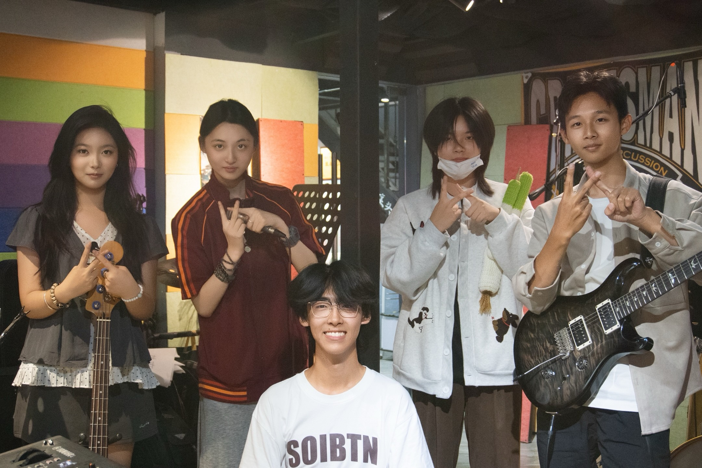
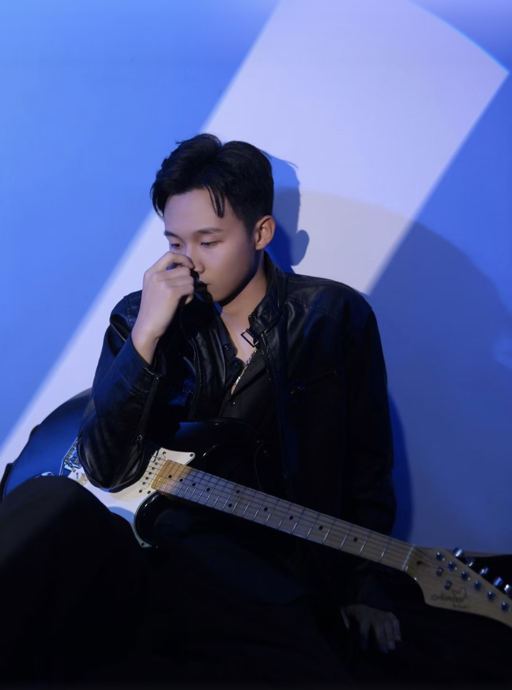
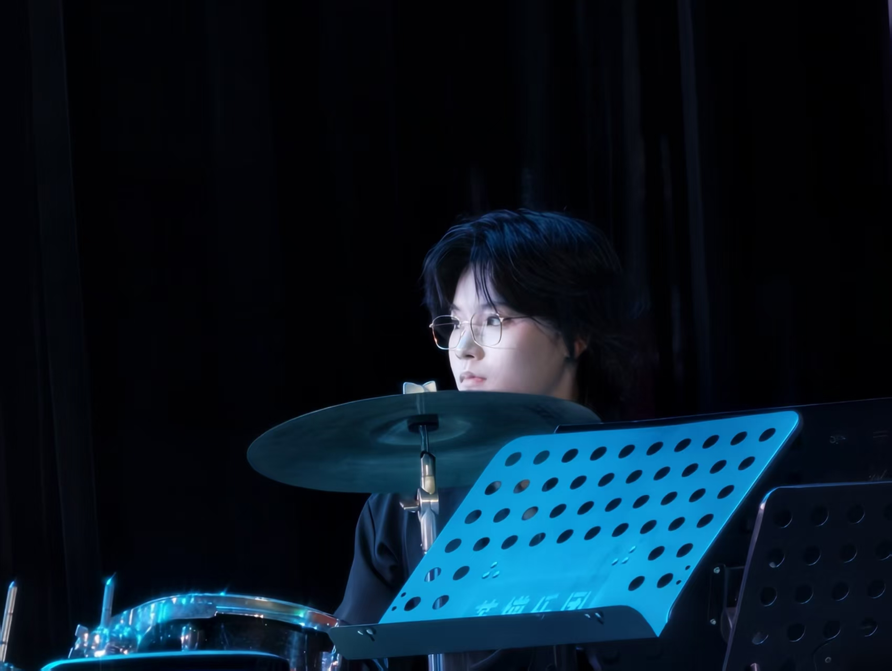
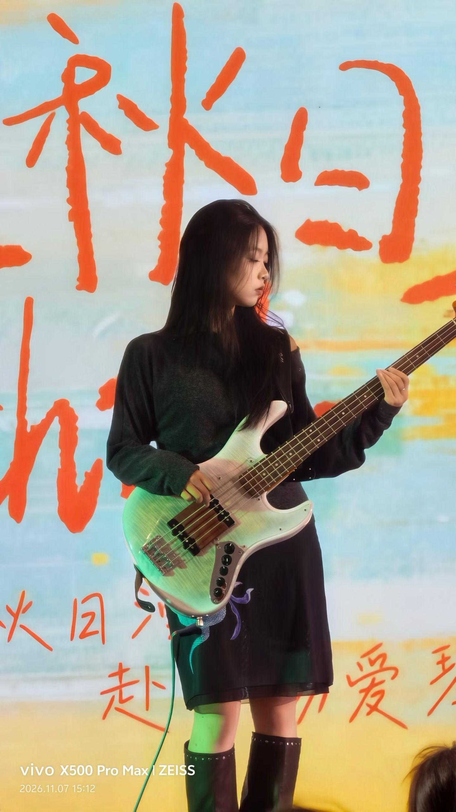
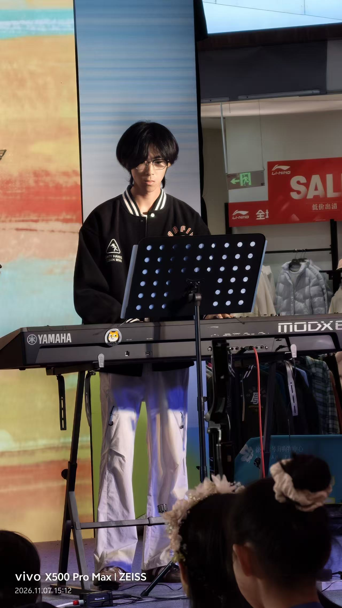

ARTIST ARCHIVE / 001 — EST. 2025
NO FAME. NO RESOURCES. JUST MUSIC.
ARTIST — CauseTen 拾因
GENRE — Mixpop
ORIGIN — Xuzhou, China
FORMED — 2025
MEMBERS — 05
STATUS — First Show Incoming

FILE 002 / THE STORY
CauseTen is a Mixpop band formed in 2025 in Xuzhou, Jiangsu, China.
Five people, five different personalities, somehow ending up in the same band. Their music doesn't fit into just one genre, and honestly, neither do they.
No fame, no connections, and no big names behind them. Just noise, emotions, and five people who want to make music.
They might not be the most punctual band, or even the most reliable group of people. But at least when they pick up their instruments, they know what they want to do.
Their first live show is on the way.
Nobody knows what will happen at their first performance, or how many people will hear their music in the future.
But this is their first time making some noise. This is where it all begins.

The band's hidden charmer. Looks serious and proper, but walks like he's got wheels on his shoes.

The band's communicator. Explosive beats, a gummy bear heart, and words that carry weight. Our spokesperson to the outside world.

The band's mute type. The bassist is the bass, and the bass is the bassist.

The band's emotional support, financial backer, and someone no one dares to mess with.